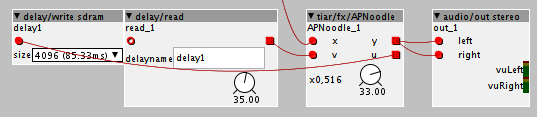

It is possible to do it with the existing objects but in this case it is not easy to take care of the implicit 16 sample delay in the feedback loop...
TheSlowGrowth contributions
Hi, @TheSlowGrowth
Some time ago, i coded a small "helper" object that helps to make Schroeder feedback/feedforward noodles with limited headache. (i used it for "chorusing" delays)
It's in community/tiar/fx/APNoodle
It has two inlets and two outlets:
inlets outlets
from delay (v) ------------- + ----> (y) output
| ^
| |
*+g *-g
| |
V |
input (x) ---- + -------------> (u) to delaywhich can be seen as:
/-----------< * g <----------\ Feedback
| |
V |
(x)---- + ----->(u) (v)----- + -->(y)
| ^
| |
\----------> * -g >----------/ Feedforwardu and v have to be connected to an external delay line:
/--------------- *+g --------------\
| |
V implicit |
(x)---- + --->(u) -> Z-16 -> delay -> (v)----- + -->(y)
| delay ^
| |
\--------------- *-g ---------------/In the editor it looks like:

Note that there is an implicit 16 sample delay in the feedback. That's mainly why i failed to implement proper all passes with objects.
Maybe you can use APNoodle to experiment with nested all passes before hardcoding and optimizing 
/-------------------- *+g --------------------\
| |
V implicit nested |
(x)---- + --->(u) -> Z-16 -> delay -> allpass -> (v)----- + -->(y)
| ^
| |
\--------------------- *-g --------------------/
TheSlowGrowth
#25
Ah great, I'll use that for my experiments! The implicit 16 sample delay won't hurt. At this point in the signal chain, there needs to be an additional delay anyway. And delay times in my reverb experiments were between 30ms and 180ms so +0,33ms doesn't change the picture much.
aclaiman
#26
Hi!
I really need a map with inlets to modify a and b from outside the object.
Is it posible to do?
Thanks!!!
Andrés
TheSlowGrowth
#27
TSG/patch/numVoices
A simple object that outputs nothing but the number of voices in the subpatch. I was surprised to find that this isn't there yet.
TSG/patch/polySpread
This object outputs a value between -64 and +64, depending on the voice number. The range is evenly spread across the voices.
For 3 voices the output would be:
Voice: 1 2 3
Output: -64 0 +64For 5 voices it would be
Voice: 1 2 3 4 5
Output: -64 -32 0 +32 +64This is really useful to create a spread for stacking voices in unison or simply for creating some differences between voices in a polysynth. You can use the math/*c object to adjust the amount of spreading.
When the random distribution is selected, the possible values will distributed randomly across the voices when the patch loads. This helps a lot when you want to use spreading in different places around a patch (Without it, voice 1 will receive the lowest possible value everywhere, which is stupid).
TheSlowGrowth
#28
TSG/dist/diodeSat
A simple diode saturation circuit with a lot of gain. This circuit appears in many classic guitar overdrive boxes (e.g. MXR Distortion) and is also used to mimic the saturation characteristics of tape.
See here for details.
TSG/ctrl/potDemux 3
Can be used to control three parameters with a single potentiometer. It can easily be modified to have more outputs (layers), if required.
The object has some features that the other solutions don't have:
- Noise cancellation. Due to noise in the measurement, there can be value changes even if the potentiometer is not physically touched or turned. That's why I wrote the object so that after some time of inactivity, the pot has to be turned by a certain amount before new changes will be registered. This "deadband" is configurable. (This is a very common method used in many devices)
- You can load initial values (patch changes for example) with a trigger pulse
- The potentiometer response is configurable: After changing the layer, the corresponding output will be updated
A) to the current poti value, immediately when the poti is touched (overwrite mode)
B) to the current poti value, after the poti has passed the current value of the output (pickup mode)
C) so that the remaining travel of the potentiometer spans all the remaining travel of the value (scale mode). Please note that scale mode assumes your input value will be between 0 and 64.
jaffasplaffa
#30
Is this for your parch only, the 16 samples delay or is this for all Axoloti patches?
Have been trying to mke a Karplus strong, but I am also hitting a limit when I try to make the delay time really short, it seems like it won't go all the way to 1 sample delay.
In Pure Data, you have to set a new block size for 1 sample, instead of the standard 64 samples to be abel to make 1 sample deay. kind of just figured it was about the same issue as in PD but never really got around to try to fix it.
jaffasplaffa
#31
Hey @TheSlowGrowth
Just wanted to add a few comments/suggestion to the diode saturation.
Which is very excellent btw 
The question is about the lookup table. By looking at it, it seems like it is using SRAM?
May I suggest creating a version that uses SDRAM instead?
I did look into it myself, but wasn't really sure where to start. It would be really nice to free up some SRAM, cause it seems like it uses a bunch, like 962 "samples" of SRAM.
Anyway, just thought I'd suggest it. Happy Easter and this is NOT an aprils fools joke
I think that's the same thing for all objects.
If you need feedback without this delay, you have to code it into the object.
jaffasplaffa
#33
Okay cool, then it makes sense why I had the issue with karplus strong. I was patching it first and then wanted to code it later on. I think I'll just try to code it then. Thanks 
Captain_Burek
#34
Hi there TSG,
love your delay, but i have a problem with external syncing. Below a certain bpm (~180 or so), the output of your timer (timeri_1) goes >1024 (as it should), which after the >>6 shift goes to a negative number, i.e. -16 instead of 16. The result is of course that slow echos become random. I don't know enough about bitshifting to remedy that, but obviously the k-rate for the read time should go to 16 and up, at that point. Any idea how to fix that, by chance?
valmir
#35
@TheSlowGrowth surely knows better, but maybe just adding an math/abs could be an easy fix?
TheSlowGrowth
#37
How long is the delay time you want to get (in seconds, roughly)? Because the delay buffer itself is only 1.36s and can't go longer than that atm. Yould it be that you're exceeding this?
The lookup table is defined in the resources.h file that comes with the object. It is stored as const int32_t and will sit in the flash memory (because its const). It shouldn't take up any RAM at all.
jaffasplaffa
#38
Cool, thank you for the clarification. I wasn't 100% sure how it was handled memory vise, but that makes sense
Captain_Burek
#39
No, it's much shorter than that, as I said, about .3secs (i can get much longer delays using the manual time ctrl).
The problem really is with the conversion from integer to f-rate by bitshift, as described in my first post. The MWE below is a `take-out miniature' from your echo object: the i-value goess from 15.58 to -16 when the input goes from 1023 to 1024. I'm sure there's an easy fix for this, so the i-value continues to go to 16 and up, i am just not the one to find it....
i to f.axp (3.1 KB)
jaffasplaffa
#40
I think the issue might be that the integer value exceed the krate range it is send to and therefor it goes into minus. You cannot send values higher than 1023 from integer to krate, it won't work, so you have to add an extra step of bitshifting.I am kind of assuming the value you are sending is higher than 1023, since you have this issue.
Been working on another module where this was an issue and I came up with this solution:
Integer to Krate conversion.axp (4.5 KB)
You have to to the shifting in 2 steps. First bitshift the >>6 when the value is still integers. And then second do a <<21 bitshift to get it into krate range. Now I get the right result, at least up to 4096.
Anyway, try it out, let me know if it works.
UPDATE 1: ohh not sure that works, cause it rounds the number to whole numbers...... Illtake a look in the patch where I have it working.
UPDATE 2:
Try this one. See patch for explanation.
Integer to Krate conversion Updated.axp (14.9 KB)
Captain_Burek
#41
How about this one? It seems to work, and handles 0-4096. There are probably cheaper ways to do this, so more help is appreciated, but this did the trick for me with the delay.
Integer to Krate conversion.axp (3.9 KB)
TheSlowGrowth
#42
I did some modifications to TSG/delay/read m interp: It now interpolates the input signals, so that removes any stepping from the modulation and drastically reduces noise at the expense of a tad higher CPU load.
I also added a phase output to the TSG/fx/tapedelay. It ramps from 0..64 in sync with the delay and you can use it to blink LEDs. Take a look at the help patch. Basically you only have to compare it to a fixed value (e.g. with math/>c) to get a boolean signal that is in sync with the delay.